V4 green_blue_50 coarse ROIs, then FINAL rectangular windows, then rgb_histogram features, then D3 nearest class-mean reference with validation thresholds, then same-class NMS. GT is used only for evaluation, never for placing or accepting windows.
RGB histograms (rgb_histogram, bins [16, 16, 16]) were extracted on every FINAL window after V4 coarse ROI generation, on the same 12 training images and 73 canonical GT boxes as ROI_refinement. ROI windows cover 34/73 GT at >=95% (V4 ceiling 36). Matching with D3 against class-mean references and validation thresholds (cone 2.905, roadworks 2.062, vertical_pannel 3.044) accepts 4,679 of 30,159 windows per image (15.5%); accepted windows still cover 32 GT at >=95% (2 lost by matching), and 24 GT have a same-class accepted window with IoU >= 0.5. After same-class NMS at IoU 0.5: 2,357.2 detections per image, TP 16, FP 28271, FN 57; precision 0.001, recall 0.219, F1 0.001. Per class: cone: P 0.000 R 0.143 (TP 1, FP 12916, FN 6); roadworks: P 0.000 R 0.000 (TP 0, FP 4085, FN 3); vertical_pannel: P 0.001 R 0.238 (TP 15, FP 11270, FN 48). Unmatched-prediction reasons: background 25483, localization 2781, wrong_class 5, duplicate 2. References: 300 training-split images (1483 GT boxes); thresholds: 120 validation-split images (6531 regions, 5950 background windows). None of the 12 evaluation images was used for fitting, but they are official-training images, so this is development evidence, not held-out test performance. Background calibration windows come from unannotated regions, and the GT is not exhaustive.
| method | gt_count | covered_95 | covered_100 | coverage_95 | iou_05 | coarse_covered_95 | conditional_coverage_95 | lost_coarse_covered_95 | matched_coarse_ratio_95_median | compact_ratio_95_median | compact_ratio_95_p90 | accepted_covered_95 | lost_by_matching_95 | accepted_same_class_iou_05 | detected | mean_windows | mean_accepted | mean_final_detections | TP | FP | FN | precision | recall | f1 | mean_runtime_seconds |
|---|---|---|---|---|---|---|---|---|---|---|---|---|---|---|---|---|---|---|---|---|---|---|---|---|---|
| FINAL+rgb_histogram | 73 | 34 | 32 | 0.466 | 0.438 | 36 | 0.944 | 2 | 271.723 | 3.259 | 5.583 | 32 | 2 | 24 | 16 | 30159.000 | 4679.417 | 2357.250 | 16 | 28271 | 57 | 0.001 | 0.219 | 0.001 | 1.929 |
| method | source_label | gt_count | covered_95 | covered_100 | coverage_95 | iou_05 | coarse_covered_95 | conditional_coverage_95 | lost_coarse_covered_95 | matched_coarse_ratio_95_median | compact_ratio_95_median | compact_ratio_95_p90 | accepted_covered_95 | lost_by_matching_95 | accepted_same_class_iou_05 | detected | TP | FP | FN | precision | recall | f1 |
|---|---|---|---|---|---|---|---|---|---|---|---|---|---|---|---|---|---|---|---|---|---|---|
| FINAL+rgb_histogram | cone | 7 | 7 | 7 | 1.000 | 1.000 | 7 | 1.000 | 0 | 493.425 | 3.633 | 5.479 | 7 | 0 | 4 | 1 | 1 | 12916 | 6 | 0.000 | 0.143 | 0.000 |
| FINAL+rgb_histogram | roadworks | 3 | 0 | 0 | 0.000 | 0.667 | 1 | 0.000 | 1 | NaN | NaN | NaN | 0 | 0 | 1 | 0 | 0 | 4085 | 3 | 0.000 | 0.000 | 0.000 |
| FINAL+rgb_histogram | vertical_pannel | 63 | 27 | 25 | 0.429 | 0.365 | 28 | 0.964 | 1 | 252.099 | 3.045 | 5.399 | 25 | 2 | 19 | 15 | 15 | 11270 | 48 | 0.001 | 0.238 | 0.003 |
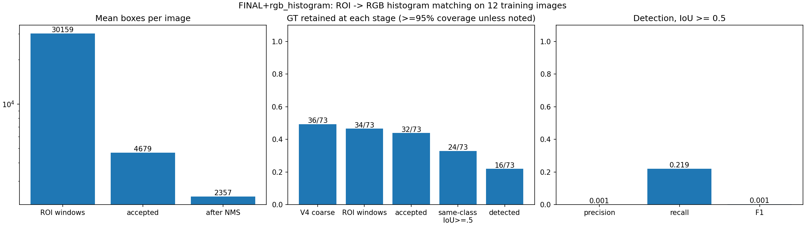
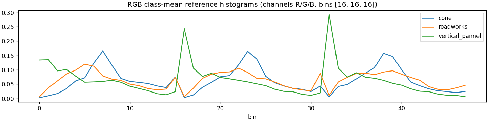
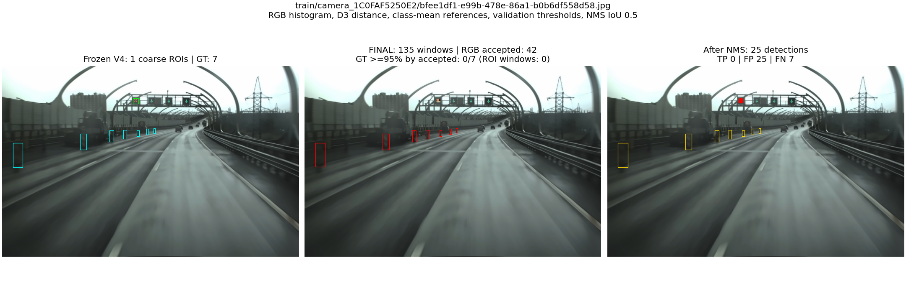
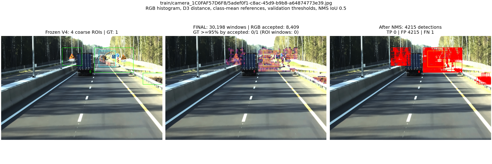
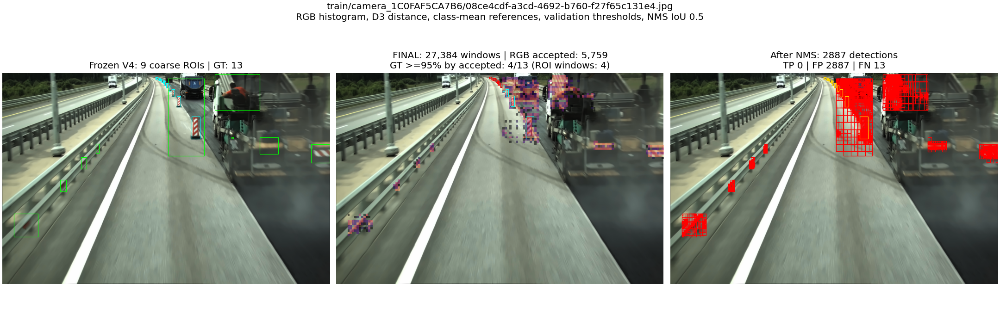
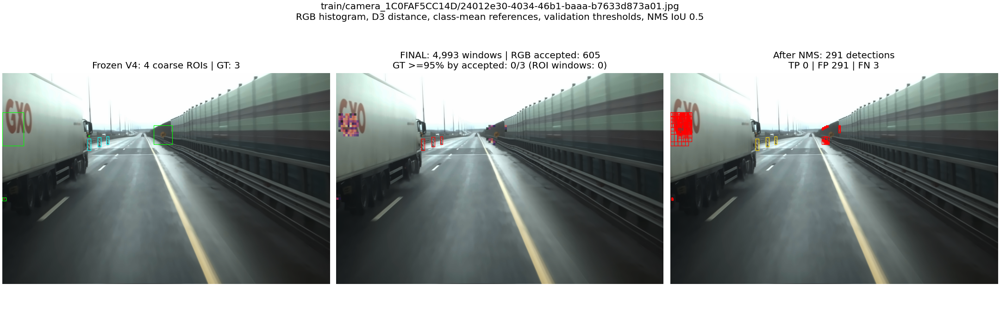
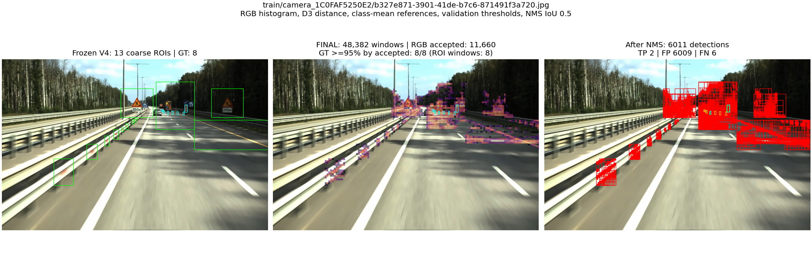
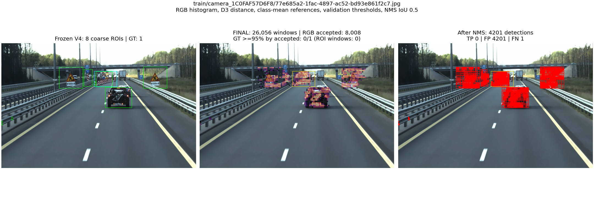
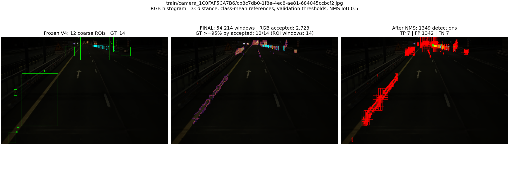
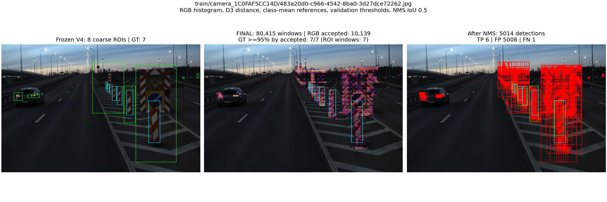
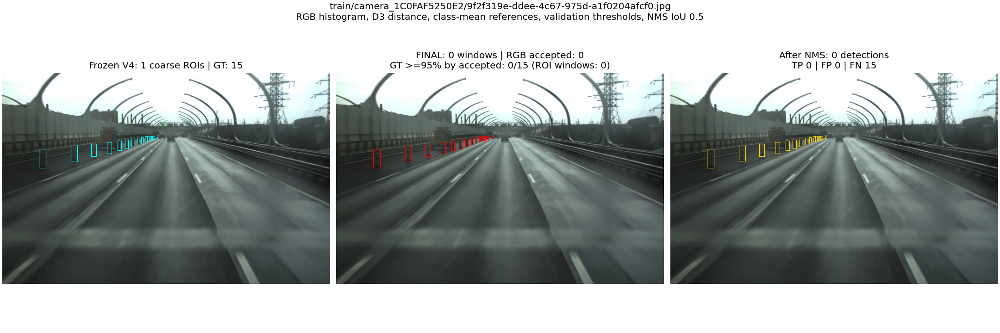
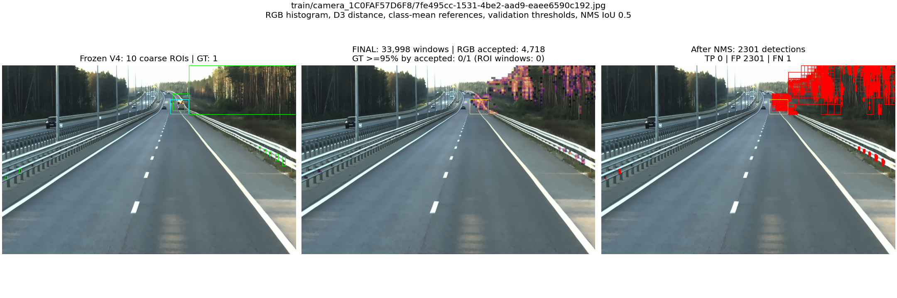
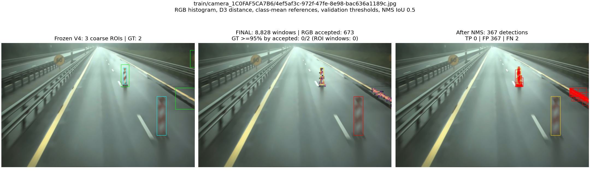
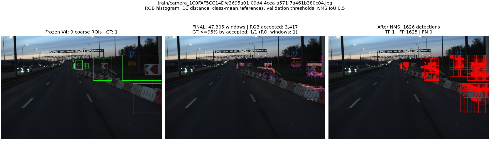